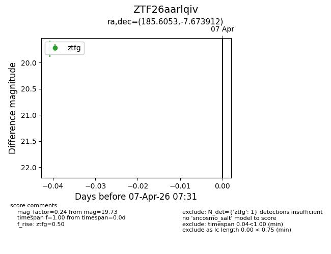
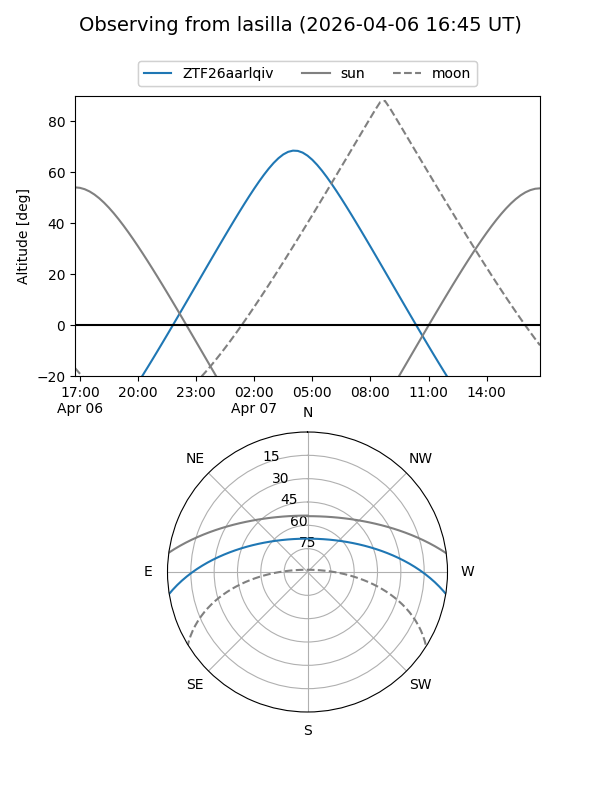
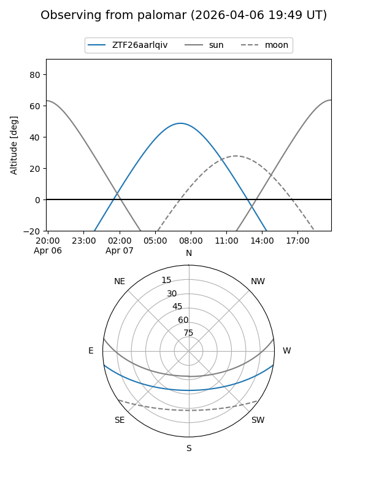

ZTF26aarlqiv
Target ZTF26aarlqiv at 2026-04-07 07:35
Aliases and brokers:
FINK: link
Lasair: link
ALeRCE: link
alt names
ZTF26aarlqiv (ztf,fink_ztf)
Coordinates:
equatorial (ra, dec) = 185.6053,-7.67391
equatorial (HMS+DMS) = 12:22:25.28,-07:40:26.08
galactic (l, b) = (290.4887,+54.49530)
Flags:
Photometry:
last ztfg=19.73
1 ztfg detections
Lightcurve

Visibility


Additional plots